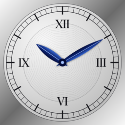

Gizlilik Politikası
Klasik Kadran · Son güncelleme: 7 Kasım 2026
Klasik Kadran hiçbir kişisel veri toplamaz, saklamaz veya paylaşmaz.
- Hesap, giriş veya kayıt yoktur.
- Analitik, reklam veya izleme (tracking) yoktur; üçüncü taraf SDK kullanılmaz.
- Uygulama internet bağlantısı kullanmaz; tüm işlemler saatin üzerinde gerçekleşir.
- Kronometre durumu yalnızca uygulama açıkken bellekte tutulur.
Bu politika değişirse güncel hâli bu sayfada yayınlanır. Sorularınız için GitHub Issues üzerinden ulaşabilirsiniz.
Privacy Policy (English)
Klasik Kadran does not collect, store or share any personal data.
- No accounts, sign-in or registration.
- No analytics, advertising or tracking; no third-party SDKs.
- The app does not use the network; everything runs on the watch.
- Chronograph state is kept in memory only while the app is open.
Any changes to this policy will be published on this page. Questions: GitHub Issues.